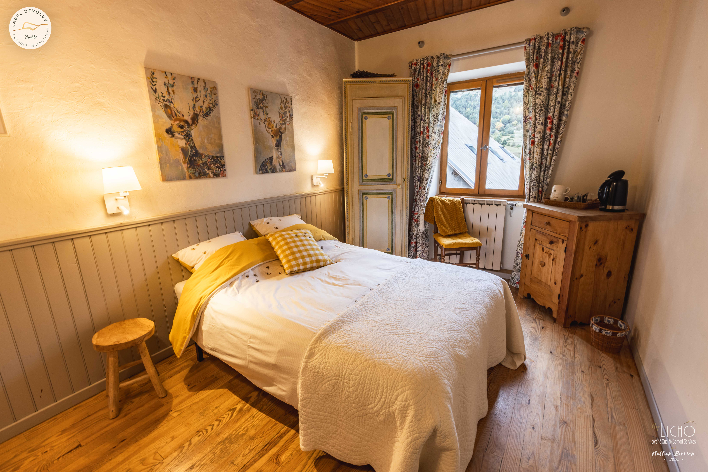
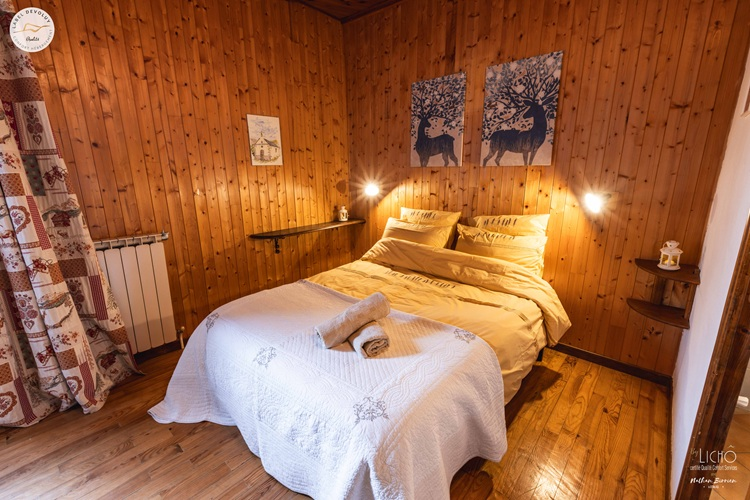
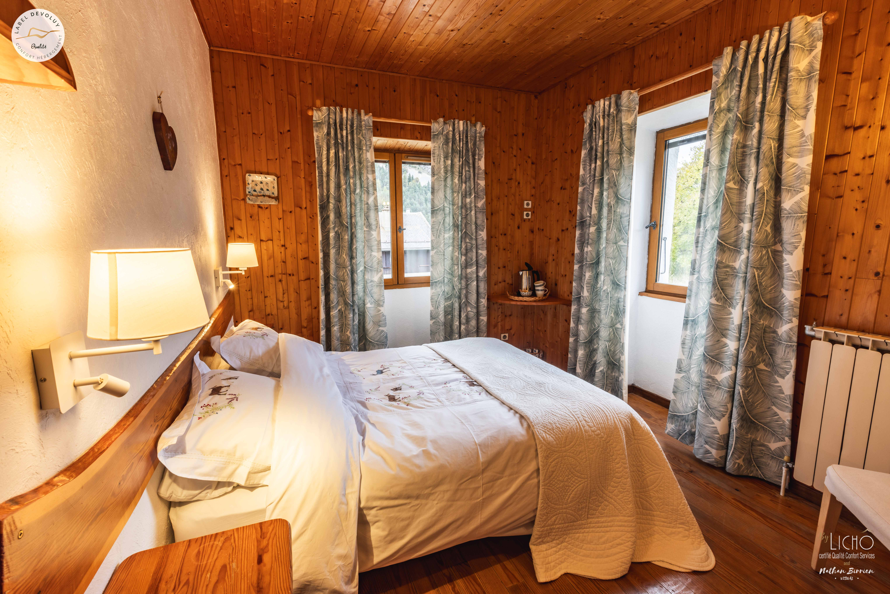

Une ancienne ferme
au pied du Pic de Bure
La
Tourtette
Maison de montagne
depuis toujours ↘
depuis toujours ↘
Saint-Étienne-en-Dévoluy · 05250
Le calme d’une maison de pierre, le relief à portée de regard.
La Tourtette accueille les séjours en duo, en famille ou entre amis dans une maison de montagne rénovée. Cinq chambres, un salon chaleureux, et le Dévoluy tout autour.
Découvrir la maison ↓
“ L’art de prendre
son temps. ”
La maison
Cinq chambres.
Douze hôtes.
Chaque séjour se vit à son rythme : petit-déjeuner inclus, table d’hôtes sur réservation, jardin et terrasse lorsque la saison s’y prête.
- Capacité
- 5 chambres · 12 personnes
- Ouverture
- Toute l’année
- Situation
- Route du Pin · Dévoluy
- À proximité
- Tour du Dévoluy

03 / La maison
Chaque pièce garde le caractère de la ferme et laisse entrer le paysage.
Tarifs indicatifs
Chambre une personne75 €
Chambre deux personnes85 €
Chambre familiale · 3 pers.110 €
Petit-déjeuner inclus. Tarifs et disponibilités à confirmer directement auprès de La Tourtette.